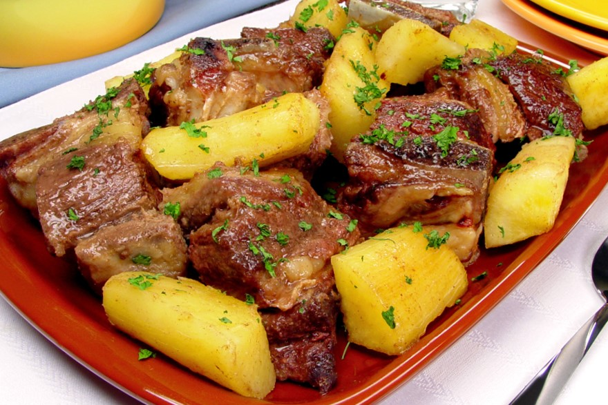

Costela com Mandioca

Ingredientes
- 1 kg de costela em pedaços
- 3 colheres de sopa de óleo
- 1 cebola picada
- 3 dentes de alho picado
- 2 tabletes de caldo de carne
- 1/2 kg de mandioca em pedaços
- Pimenta a gosto
Modo de preparo
- Tempere a costela a seu gosto e leve para dourar na panela de pressão com o óleo a cebola, o alho, o caldo e a pimenta.
- Acrescente água quente que cubra e deixe cozinhar na pressão por 30 minutos ou até que esteja macia.
- Coloque a mandioca ponha pressão por 5 minutos se necessário acrescente mais água passe para uma travessa.
- Sirva polvilhada com a salsinha e arroz branco.
voltar